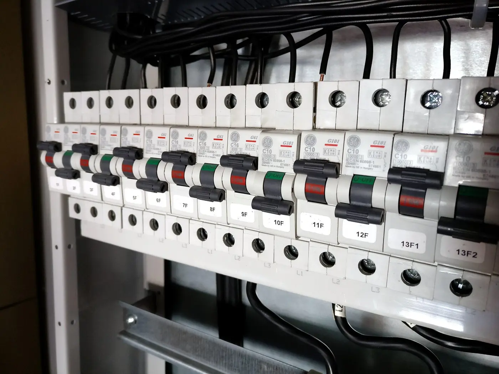
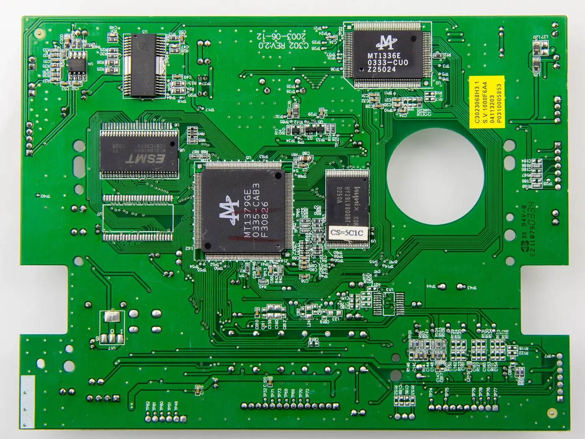
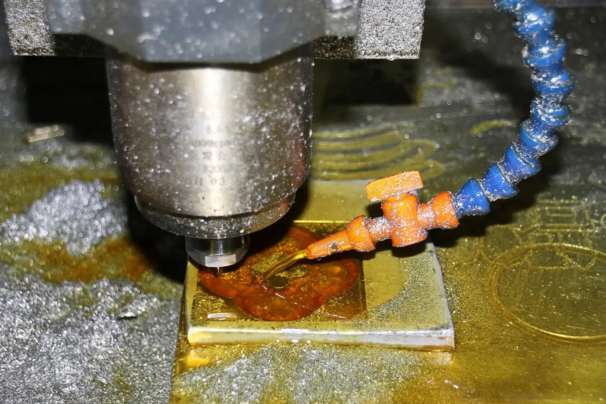
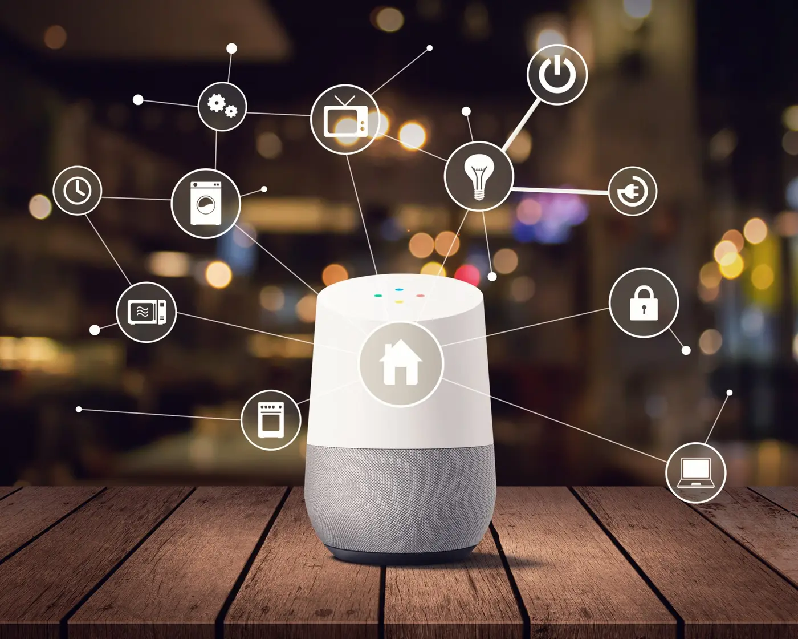
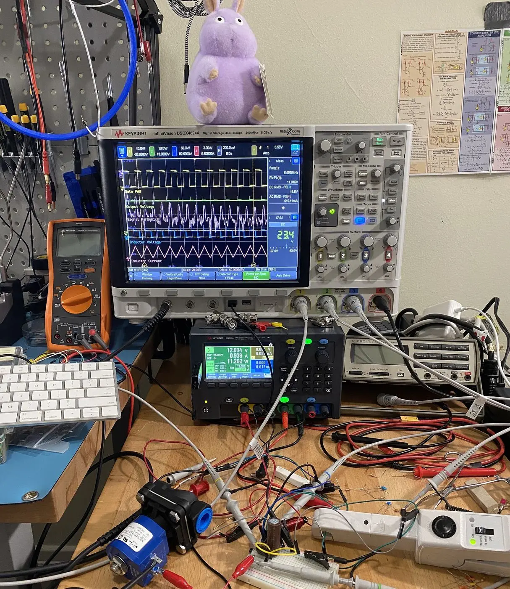

Engenharia e tecnologia integrada
Transformamos desafios em soluções inteligentes.
Integramos elétrica, eletrônica, automação, software e inteligência artificial para indústrias, residências e negócios.
Imagem ilustrativaOnde atuamos
Tecnologia para cada desafio
Competências
Engenharia que conecta hardware e software




Aplicações
Da necessidade à solução
Exemplos ilustrativos de aplicação, não projetos já executados.
Monitoramento de produção
Exemplo: coletar dados de máquinas e visualizar indicadores de produção e paradas.
Saiba mais
Retrofit de equipamentos
Exemplo: modernizar controle e interface de máquinas após avaliação técnica.
Saiba mais
Por que a NEODO
Tudo em um só lugar
Elétrica, eletrônica e software na mesma solução.
Solução sob medida
Desenvolvemos para a sua necessidade.
Tecnologia atual
Desenvolvimento de hardware e software, IoT e inteligência artificial.
Como trabalhamos
1. Diagnóstico
Entendemos sua demanda.
2. Projeto
Proposta com escopo, prazo e investimento.
3. Execução
Instalação, programação e testes.
4. Suporte
Garantia e contratos de suporte contínuo.
Sobre a NEODO
A NEODO Soluções Inteligentes é uma empresa de engenharia especializada em automação, eletrônica e inteligência artificial. Desenvolvemos soluções que unem hardware e software para indústrias, residências e negócios em todo o Brasil.
Conheça a NEODO
Perguntas frequentes
Como funciona o orçamento?
Você nos conta a demanda, avaliamos e enviamos uma proposta com escopo, prazo e investimento.
Qual o prazo de um projeto?
Depende do escopo. O prazo é definido na proposta, antes de qualquer execução.
Atendem empresas de pequeno porte?
Sim. Desenvolvemos soluções para empresas de todos os tamanhos.
É possível automatizar máquinas antigas?
Sim. Com retrofit, modernizamos equipamentos existentes sem precisar substituí-los.
Preciso trocar meus equipamentos para automatizar minha casa?
Na maioria dos casos, não. Adaptamos a automação à estrutura que você já tem.
Vocês oferecem suporte após a entrega?
Sim. Toda entrega tem garantia, e oferecemos contratos de suporte contínuo.
Vamos conversar
Traga sua demanda. A NEODO resolve.
Conte sua necessidade para avaliarmos a viabilidade e o escopo.